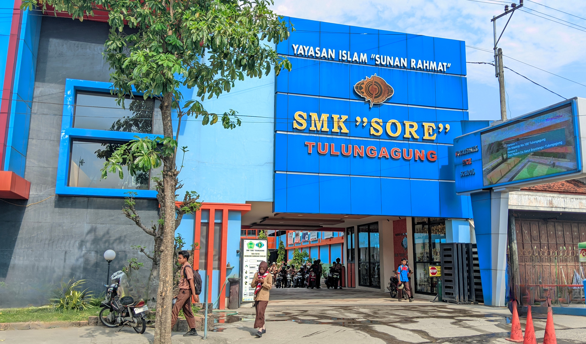
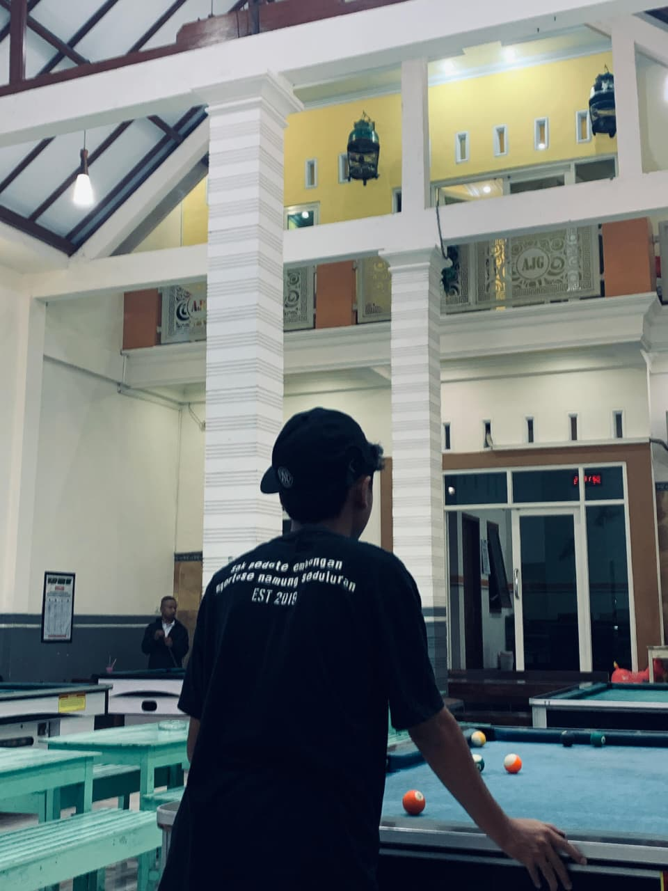

Lingkungan SMK Sore Tulungagung
Ringkasan pengalaman & keahlian teknis.
Siswa Teknik Komputer dan Jaringan di SMK Sore Tulungagung (Lulus 2027). Sangat tertarik pada dunia jaringan, administrasi server, serta web development.
Pernah magang di CV. Trikarya Sejati, berpengalaman menangani instalasi jaringan fiber optik, perbaikan koneksi Wi-Fi, serta instalasi sistem CCTV.
Pernah bekerja sebagai Barista di Bonbin Public Coffeeshop selama 10 bulan. Terbiasa bekerja cepat, teliti, dan melayani pelanggan secara profesional.
Kumpulan proyek buatan sendiri & proyek hasil praktek lapangan.
Rancang bangun topologi jaringan skala menengah menggunakan Cisco Packet Tracer dan RouterOS MikroTik dengan fitur security & VLAN configuration.
Pemasangan dan penyambungan kabel core fiber optik serta problem-solving koneksi internet pada jaringan pelanggan di CV. Trikarya Sejati.
Penguji ketahanan jaringan terhadap serangan Syn-Flood/DDoS serta penerapan rule port blocking pada perangkat router.
Pembuatan website portofolio interaktif berbasis efek 3D tilt, kursor kustom, serta audio player untuk kebutuhan personal branding.
Kirimkan pesan langsung atau terhubung melalui media sosial.